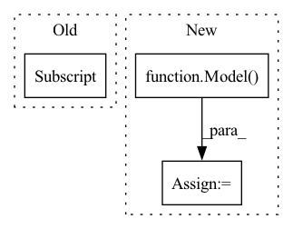

Pattern ID :27962
Before Change
// region config vars
max_num_models = conf_search["max_num_models"]
dataroot = utils.full_path(conf_search["loader"] ["dataset"]["dataroot"])
dataset_name = conf_search["loader"]["dataset"]["name"]
conf_train = conf_search["trainer"]
conf_train_full = conf_search["trainer_full"]After Change
model_seed_best = best_trains[0][2]
model_desc_best = model_desc_builder.build(conf_model_desc,
seed=model_seed_best)
model_best = Model( model_desc_best, droppath=True, affine=True)
logger.pushd("best_model_full_training")
full_trainer = Trainer(conf_train_full, model_best, checkpoint)
full_trainer.fit(data_loaders)In pattern: SUPERPATTERN
Frequency: 3
Non-data size: 3
Instances Fragment ID: 82888880
Project Name: microsoft/archai
Commit Name: 3802e31f9090f64aa1e5bea1ba6147b4bcdaa343
Time: 2022-12-16
Author: dedey@microsoft.com
File Name: archai/algos/random_darts/random_dartsspace_reg_searcher.py
M Class Name: RandomDartsSpaceRegSearcher
N Class Name: RandomDartsSpaceRegSearcher
M Method Name: search(5)
N Method Name: search(5)
M Parent Class: Searcher
N Parent Class: Searcher
M File Name: archai/algos/random_darts/random_dartsspace_reg_searcher.py
N File Name: archai/algos/random_darts/random_dartsspace_reg_searcher.py
M Start Line: 32
M End Line: 78
N Start Line: 31
N End Line: 80
Before Change
override_parent_path=model_dir,
)
base_zoo_model.download()
model_file_path = base_zoo_model.framework_files[0] .downloaded_path()
if not os.path.exists(model_file_path) or not model_file_path.endswith(".h5"):
raise RuntimeError("Model file not found: {}".format(model_file_path))
After Change
)
// Load base model to prune
base_zoo_model = Model( recipe_file_path)
base_zoo_model.path = os.path.join(root_dir, "resnet20_v1")
checkpoint = base_zoo_model.training.default
model_file_path = checkpoint.get_file("model.h5").path
recipe_file_path = base_zoo_model.recipes.default.path
if not os.path.exists(model_file_path) or not model_file_path.endswith(".h5"):
raise RuntimeError("Model file not found: {}".format(model_file_path)) Fragment ID: 82888864
Project Name: neuralmagic/sparseml
Commit Name: 56b27f66b893e622f87cdeacfc6a827e78b28929
Time: 2022-08-01
Author: 97082108+dbogunowicz@users.noreply.github.com
File Name: integrations/keras/prune_resnet20.py
M Class Name: AnonimousClass
N Class Name: AnonimousClass
M Method Name: download_model_and_recipe(1)
N Method Name: download_model_and_recipe(1)
M Parent Class:
N Parent Class:
M File Name: integrations/keras/prune_resnet20.py
N File Name: integrations/keras/prune_resnet20.py
M Start Line: 67
M End Line: 92
N Start Line: 69
N End Line: 78
Before Change
def _setup_checkpoint_manager(self):
if self.checkpoint_path and self.checkpoint_path.startswith("zoo"):
self.checkpoint_path = Zoo.load_model_from_stub(
self.checkpoint_path
).download_framework_files(extensions=[".pth"])[0]
checkpoint_state = torch.load(self.checkpoint_path)
checkpoint_manager = None
checkpoint_recipe = checkpoint_state.get("recipe")
if checkpoint_recipe:After Change
def _setup_checkpoint_manager(self):
if self.checkpoint_path and self.checkpoint_path.startswith("zoo"):
zoo_model = Model( self.checkpoint_path)
self.checkpoint_path = download_framework_model_by_recipe_type(zoo_model)
checkpoint_state = torch.load(self.checkpoint_path)
checkpoint_manager = None Fragment ID: 82888866
Project Name: neuralmagic/sparseml
Commit Name: 56b27f66b893e622f87cdeacfc6a827e78b28929
Time: 2022-08-01
Author: 97082108+dbogunowicz@users.noreply.github.com
File Name: src/sparseml/pytorch/image_classification/utils/trainer.py
M Class Name: ImageClassificationTrainer
N Class Name: ImageClassificationTrainer
M Method Name: _setup_checkpoint_manager(1)
N Method Name: _setup_checkpoint_manager(1)
M Parent Class: Trainer
N Parent Class: Trainer
M File Name: src/sparseml/pytorch/image_classification/utils/trainer.py
N File Name: src/sparseml/pytorch/image_classification/utils/trainer.py
M Start Line: 332
M End Line: 334
N Start Line: 333
N End Line: 334